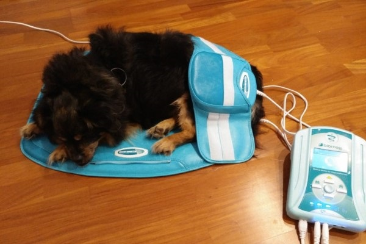
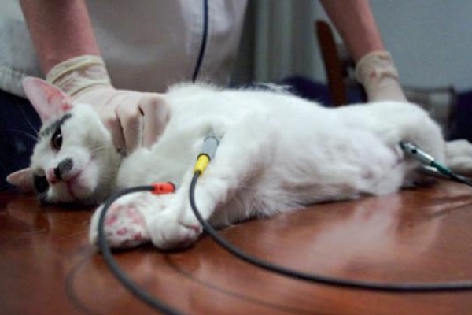
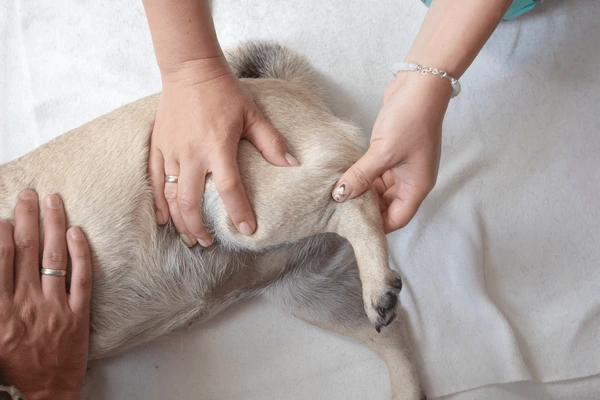

Estos son algunos de los tratamientos que hacemos
Paciente en magnetoterapia
Electrodos
Los electrodos en fisioterapia son dispositivos que se colocan en la piel para enviar corriente eléctrica controlada y ayudar en la recuperación muscular y el alivio del dolor.
Paciente con electrodos
Masajes localizados
Los masajes en fisioterapia son técnicas manuales para aliviar dolor, mejorar circulación y facilitar la recuperación física.
Masaje en paciente
